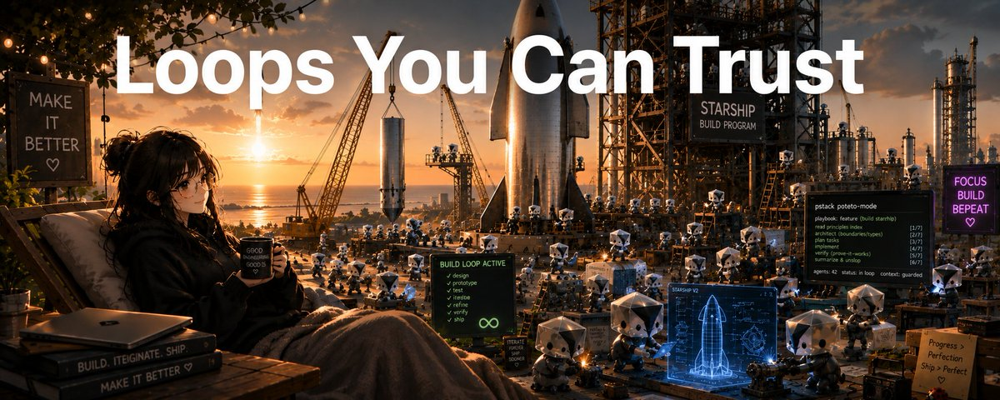
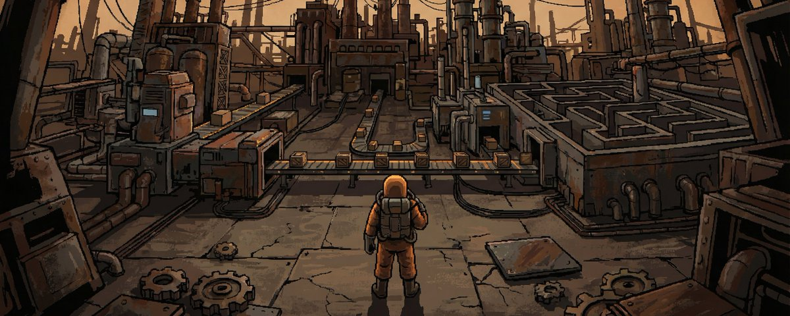

The Ember community
She gave her first conference talk at EmberConf in 2015. In 2017 she and Offir Golan presented Netflix’s use of Ember for studio tools at EmberFest.
EmberFestA little encyclopedia maintained by a fan who loves poteto.
 Start with a job worth handing overAutomate Anything with Grok Bot
The delight of making text moveCoding is dead, long live Coding
Start with a job worth handing overAutomate Anything with Grok Bot
The delight of making text moveCoding is dead, long live Coding
 Let the agent explain the problem firstThe Complete Guide to pstack Pt. 2
Let the agent explain the problem firstThe Complete Guide to pstack Pt. 2
 Give the agent a path through the appThe Complete Guide to pstack Pt. 1
Give the agent a path through the appThe Complete Guide to pstack Pt. 1

What a breakfast egg teaches about bottlenecksLoops You Can Trust What managing engineers taught her about agentsHow I Use Cursor
What managing engineers taught her about agentsHow I Use Cursor

From mining ore to laying trackCoding is Dead, Long Live Engineering Before the agent writes its first linedeepcoding
Before the agent writes its first linedeepcoding Grok Bot Q&A with Lauren Tan
2026 · Matt Palmer · Live Q&A · 1:26:32
Grok Bot Q&A with Lauren Tan
2026 · Matt Palmer · Live Q&A · 1:26:32
 The Rise Of AI Coworkers
2026 · Y Combinator · Lightcone · 1:00:06
The Rise Of AI Coworkers
2026 · Y Combinator · Lightcone · 1:00:06
 All Code Is Slop (Except Mine)
2026 · AI Engineer CODE · 17:31
2,000 PRs in a Month: How Lauren Tan Uses AI Agents
2026 · Cursor Compile London · 38:02
All Code Is Slop (Except Mine)
2026 · AI Engineer CODE · 17:31
2,000 PRs in a Month: How Lauren Tan Uses AI Agents
2026 · Cursor Compile London · 38:02
 LIVE: Poteto (creator of pstack) on shipping 1,000's of PR's a month at SpaceX
2026 · Matt Pocock · Live Q&A · 1:05:36
LIVE: Poteto (creator of pstack) on shipping 1,000's of PR's a month at SpaceX
2026 · Matt Pocock · Live Q&A · 1:05:36
 We Built Grok Bot. Here Are Our 14 Best Bots | Peng Zheng & Lauren Tan
2026 · Peter Yang · Behind the Craft · 45:04
We Built Grok Bot. Here Are Our 14 Best Bots | Peng Zheng & Lauren Tan
2026 · Peter Yang · Behind the Craft · 45:04
 Company build, day 3: Launching Thursday Arena
2026 · Grok Bot Galaxy · 4:00:00
Company build, day 3: Launching Thursday Arena
2026 · Grok Bot Galaxy · 4:00:00
 Company build, day 2: Turning bot templates into a game
2026 · Grok Bot Galaxy · 4:00:00
Company build, day 2: Turning bot templates into a game
2026 · Grok Bot Galaxy · 4:00:00She gave her first conference talk at EmberConf in 2015. In 2017 she and Offir Golan presented Netflix’s use of Ember for studio tools at EmberFest.
EmberFestIn her own account, she led engineering for Studio Programming before managing a team in the UI Engineering organization.
Lauren Tan · About.meTan wrote the React Compiler beta announcement and presented a practical compiler session at React Conf that year.
ReactIn How I Use Cursor, she shared pstack and explained how debugging work shaped the way she coordinated agents.
Lauren Tan · XAI Engineer CODE lists her as a Principal Engineer. Her talk draws on the Grok Bot team’s practice of reviewing evidence from running software.
AI Engineer